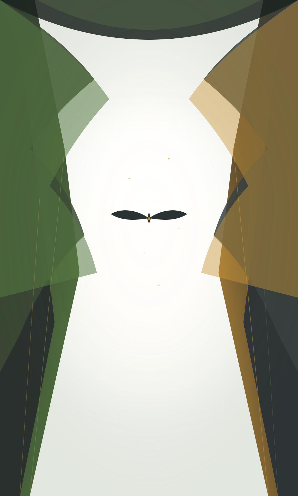
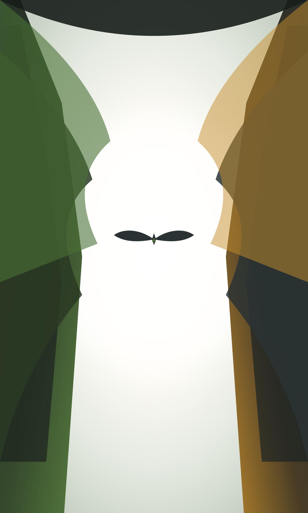
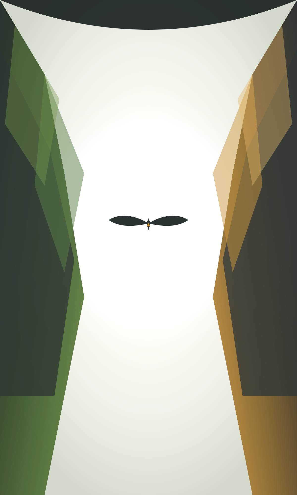
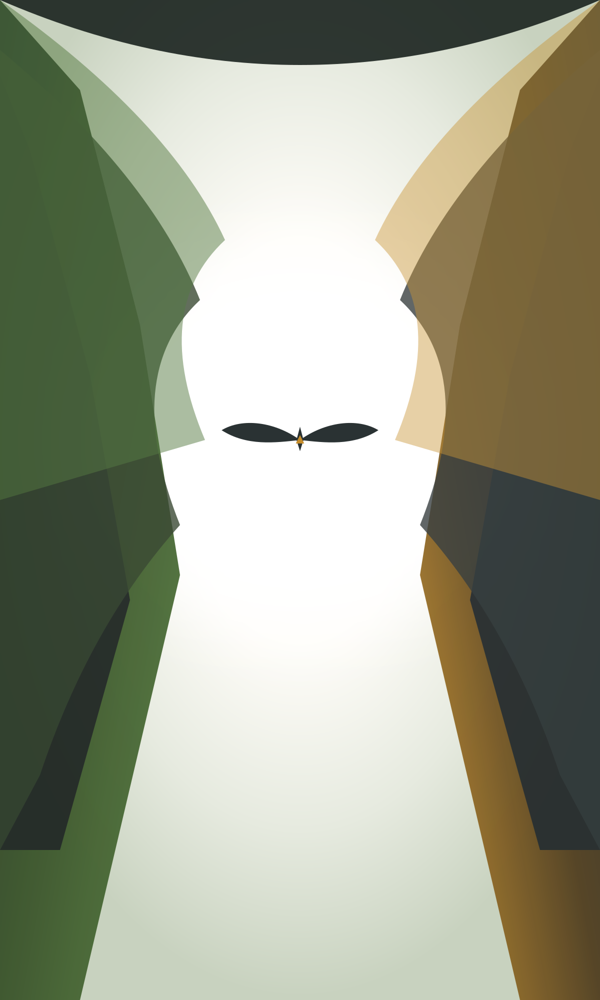

Inspiradas na perspectiva zenital da foto de referência (árvores/colunas laterais emoldurando um centro luminoso com o símbolo no meio), com contraste de fundo claro para garantir 100% de legibilidade dos textos.

100% de polímero pós-consumo em Caruaru-PE.
Árvores nativas do Agreste fundem-se a pilares de compósitos verdes e dourados, com dossel invertido superior e o pássaro VIRA no centro.
Baixar Opção 01 (Vetor 4K)
Engenharia, parque solar e precisão técnica.
Perspectiva zenital ascendente onde os silos da fábrica VIRA sobem como colunas arquitetônicas em direção à luz solar.
Baixar Opção 02 (Vetor 4K)
Flakes translúcidos e pureza molecular.
Torres geométricas facetadas inspiradas nos flakes poliméricos micronizados subindo pelas laterais, criando um cânion de luz.
Baixar Opção 03 (Vetor 4K)
Serras do Agreste e regeneração viva.
A fusão orgânica mais próxima da referência: pinheiros e serras do Agreste enquadrando o céu límpido com névoa sutil e o pássaro VIRA em pleno voo.
Baixar Opção 04 (Vetor 4K){kind=link}
{kind=link}
{kind=link}
{kind=link}